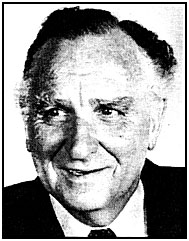

Obituary
------------------------------------------------
Jack Archibald (John)
Paton
Former deputy display
advertising manager and first marketing manager of The Age;
leading advertising agency executive. Born: 4 June 1920. Died: 18
August 1995, aged 75.
John
Paton spent his business life in the creative world of advertising
and marketing.
Paton
joined The Age in 1967 as deputy advertising manager (display) after a highly
successful post-war career including senior executive positions with a
number of leading advertising agencies such as J. Walter Thompson
and Paton Advertising.
To many
in the newspaper scene it seemed a strange appointment. What they did not realise was that Ranald
Macdonald, Graham Perkin, Bill Bland, John Nash and a few other
senior executives at The Age were planning a frontal
assault on the dominance of the Herald & Weekly Times in
Melbourne. The first strike was to be a new Sunday newspaper, Newsday,
and Paton was to be the first advertising manager.
He
played a leading role in the revitalisation of The Age
under Perkin
and Macdonald in the late 1960s and early 1970s.
"John established a very good rapport with the editorial
staff via the editor. Graham Perkin respected John for his
marketing skills and they worked wonderfully together improving
the paper's editorial appeal," said Mr Bill Bland, the
general manager at the time.
"Ranald and I thought The Age needed a top person with
widely recognised marketing and advertising experience and John was the ideal man for the job."
Paton
was also an important member of the senior management group, which was planning a number of projects including
'Project X', the codename for the launch of Newsday.
|
 |
When
the Victorian Printers Operative Union and the
newsagents' association stonewalled the introduction of
Sunday newspapers, Newsday
was instead launched as an evening daily in September 1969. This
was originally stage two of Project X and was brought forward
after the firm had employed so many extra staff to work on the
thwarted Sunday paper.
Paton
was part of the inner management group planning a series of
developments to make profits from the increased press capacity
when The Age moved from its cramped Collins Street location
into Spencer Street in 1969.
"Whenever we had a marketing or an advertising problem, John was never short of a creative answer," Mr Bland
said.
Another
of Paton's innovations was to have Irving Saulwick carry out
readership research of The Age, which introduced the
concept of "profile" selling of newspaper advertising in
Australia. This research was also the first to make large-scale
use of computer analysis of readership survey figures.
Until
then, sales staff sold on total circulation figures, but Paton had
the sales staff talking and selling the profile of The Age
reader as being in the upper income group, professionals with senior executive positions, with higher standards of
education and "decision makers".
"Our aim was to position The Age as the leading paper
for national advertising in Australia. John's marketing skills and
his knowledge of media buying in advertising agencies saw us
achieve that and dramatically increase our share of the
market," Mr Bland said.
When Newsday
folded in May 1970, Paton was retained as the first marketing
manager of The Age. He stayed in that role until his
retirement in 1984. After that, he was a marketing consultant for another three years.
Paton
started his life-long career in advertising and radio broadcasting
before World War II. He served with HQ First Australian Corps
South-West Pacific Area during the war. He was a hard-working
member of Legacy for more than 37 years.
He is
survived by his wife, Jean, a daughter, Gillian, and a son,
Russell.
--Robin Howells
|